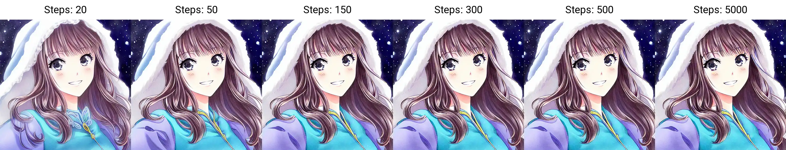
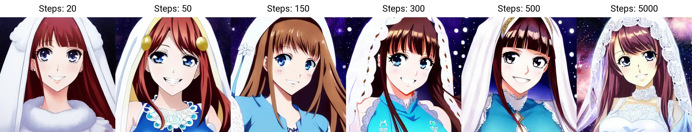
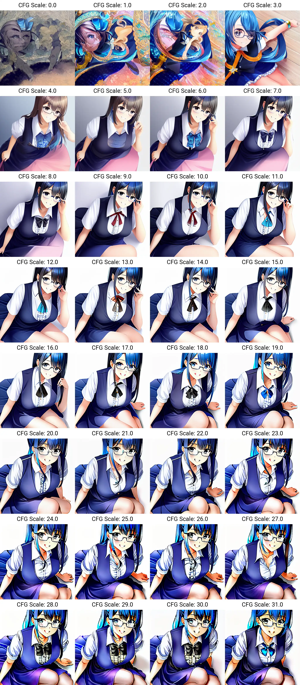
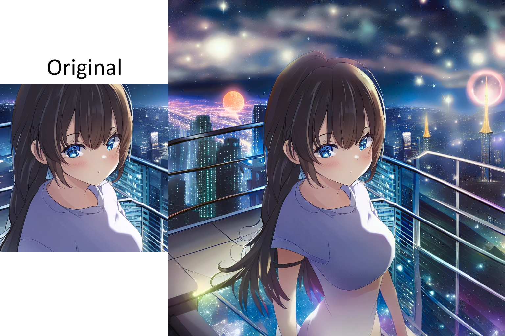
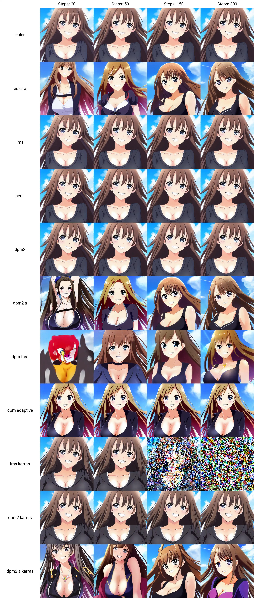

Introduction
This page is dedicated to providing tips, tricks, and information on Stable Diffusion and Waifu Diffusion. Some of the information on this page has been sourced from other authors and will be credited where possible. The focus of this guide is on Waifu Diffusion and anime art styles, but the information provided should still be applicable to any kind of AI generation. This guide also makes reference to features available on the AUTOMATIC1111 webGUI, which may not be available on other user interfaces.
Getting Started
Stable Diffusion is open source, meaning it can be used and installed in a variety of ways. For those who are technically inclined, Stable Diffusion can be run entirely through command line commands. There are even methods for running Stable Diffusion in the cloud, such as through Google Colab. This guide will focus on methods for running Stable Diffusion locally on your own computer, without requiring extensive technical knowledge or steps to get started.
AUTOMATIC111 WebGUI
Please be aware that at the time of writing the AUTOMATIC111 Github repository does not contain a license of any kind. This legally means by default all of the code in the repository is owned by the individual people who have contributed code. This means that any contributer could take down the repo with a DMCA request as their intellectual property is being used. It is an unlikely event, but a possible one & without Github's terms of service, it would not even be legal to use the WebGUI. (It may technically not be legal right now, I'm not sure, I'm not a lawyer). For more information on this, visit Pull Request 4222, Issue 2059, & Information on no license. Use at your own risk.
The AUTOMATIC1111 webGUI is the most popular locally run user interface for Stable Diffusion, largely due to its ease of installation and frequent updates with new features. Following Voldy's Guide, you should be able to install it without much difficulty.
Rentry has created an excellent guide on how to use the AUTOMATIC1111 webGUI locally on your computer. Voldy's Guide provides a wealth of information on getting started with Stable Diffusion and Waifu Diffusion.
I have also created my own guide based on Voldy's that provides more detailed information and instructions for installing on macOS M1/M2 Macs. You can find my guide here.
The AUTOMATIC1111 webGUI has many features, and I have created a separate page to properly display and describe these features. You can find this page here.
NMKD GUI - One Click Installer
If you have difficulty following the guide for AUTOMATIC111's webGUI or simply want to try a different user interface, N00MKRAD on itch.io is developing a standalone program for running Stable Diffusion. As of October 17, 2022, this program includes core features and support for dreambooth training on 24GB Nvidia GPUs. The developer is also working to reduce the VRAM requirement. While this tool is available free of charge, I recommend supporting its development through a donation.
To use the program, simply download and unzip the file on your computer, then run the
While this guide primarily focuses on the AUTOMATIC111 webGUI due to its quick implementation of new features and extensive functionality, the information provided should apply to other user interfaces as they are all based on Stable Diffusion.
Minimum Requirements
Recommended Requirements
Dreambooth Training Requirements
You can download the NMKD GUI at its itch.io page.
Artroom.ai - One Click Installer
Another easy to use local way to run Stable Diffusion released on 17/11/22 and features a simple/ sleek interface while still providing great control over model parameters.
It's an easy setup process that can take upwards of 10 minutes to install everything and then you're good to go. As with most UI's it is not as feature rich as AUTOMATIC1111's Web GUI, but it is more stable and a much better user experience that includes a introduction tutorial when you first launch the program. The creator of this software has stated they will keep the Artroom software free forever and only monetize through other means. So you will be able to create new art as long as you want completely for free and without the headaches of working with the extremely experimental and fast moving AUTOMATIC1111 Web GUI.
A screenshot from Reddit from a creator of Artroom stating the program will remain free.
You can also use your own models with this program by going to the settings panel and setting the models weights folder to where you store all of your models or by placing your models into the default location. At the time of writing Stable Diffusion 2.0 models are not supported.
You can stay up to date with the softwares progress by following the Trello Artroom Roadmap
Requirements
You can download Artroom.ai at its official website.
DiffusionBee - SD for M1/M2 Macs
While not as feature rich as Windows or Linux programs for Stable Diffusion, DiffusionBee is a free and open source app that brings local generation to your Mac products. It is the only MacOS program that I have currently found that installs as easy as any other app on your Mac. Simply download, open & drag to your application folder. This is by far the best installation flow of any Stable Diffusion program on any platform, it will even automatically download the Stable Diffusion model to get you started. The only downside is that is it incredibly bare bones in functionality at the current time. I am also unsure how many features are planned for this program as there is not a lot of information available on their website.
Current features include, Text to Image, Image to Image and Outpainting. Those should be enough for anyone who is wanting to dabble in image generation and its ease-of-use makes up for its current lack of features.
On 04/11/22 Diffusion be was updated with more features including inpainting, upscaling and improvements to all other features.
Performance feels a lot slower than anticipated as well considering I am testing on an M1 Macbook Pro with 32GB RAM, it takes a considerable amount of time to render 1 image compared to my Windows PC with a Nvidia RTX 3080 with 10GB VRAM.
Requirements
You can download DiffusionBee at its official website.
Image directory
If you're looking for where your images are saved, they are in a hidden directory at
Models directory
The Stable Diffusion model is located at
Models
Models are an essential component in the process of AI image generation. All models are checkpoint files with the
The top models currently in use include Stable Diffusion, Waifu Diffusion, and Novel AI. However, Novel AI is a paid service and will not be discussed in this guide, which focuses on open-source projects. For more information on these models, please visit the models page.
Model Information
Float16 vs. Float32
According to Rentry.org,
Model Version
For some models, multiple versions are available for download. These may include "pruned" or "ema" versions. EMA models are used for re-training or continuing to train the original model, and these files will be the largest as they contain all weights, biases, and other data needed for proper training. Unless you are training the model yourself, EMA models are not necessary and do not provide any additional quality to generated images. It is recommended to choose the smallest file size model when generating images, as this will take up less VRAM, allowing for faster and more efficient generation. There is minimal difference in quality between small and large file size models.
VAE - Variable AutoEncoders
VAEs are a type of diffusion model that processes the encoding and decoding of data to prevent overfitting. Most model files already include the original VAE from Stable Diffusion. However, new VAE versions were recently released on 26/10/22 that are supposed to be an improvement on the original. These updated VAEs can be used with model files to improve the quality of generated images. As this field continues to advance, more VAE's will become available.
You can find these VAE files here. Download the ft-MSE version for 'diffusers' models and the ft-EMA version for 'original' models. If you use the AUTOMATIC1111 WebGUI, all models are of the 'original' type.
To use the updated VAE files, simply rename them to match the name of the corresponding .ckpt file and change the file extension to .vae.pt (e.g.
Alternatively, you can also use commandline args in the webui-user.bat file and add the arg
If you have added the VAE correctly, upon relaunching the webGUI, a line similar to
The AUTOMATIC1111 GUI has been updated to allow VAE's and models to be kept in separate folders, allowing for easier switching of VAEs within the GUI's settings tab. The previous method for using VAEs with the GUI, as described in the previous paragraph, will still work if desired however it is not required anymore.
More VAE's
Additionally, Waifu Diffusion also has a work in progress VAE available in the 1.4 Huggingface repository. As the 1.4 version is not yet complete, this VAE is considered experimental but has been known to improve anime results.
Security Risks
It is important to note that models can potentially contain malicious code or viruses if created by nefarious individuals. These individuals could create an enticing looking model, but hide a virus within it that could potentially harm your computer. This is why you may see your antivirus software flag a model you download as "malware", however this does not always mean the model is bad as antivirus software is not always 100% accurate. It is recommended to stick with trusted and widely used models like Stable Diffusion and Waifu Diffusion to avoid potential risks.
However, not all models are dangerous and the AUTOMATIC1111 has built-in features to safeguard against harmful models. To ensure the safety of your computer, it is important to use caution when downloading and using AI models.
A Reddit user u/diStyR has also created a simple model scanner to allow you to scan model files to make sure they do not contain malware. This software only works on Windows at the time of writing. A advantage to using this software is that you can enter URL links to a model and the software can check those models without you needing to download it yourself (and risk downloading a malicious file). As with other anti-virus software is not 100% accurate and this program can flag safe models as dangerous or vice versa, use at your own discretion. To run, find the
Reddit user u/LogicallyDepressed has checked scanning software itself and claims is safe to use after examining its source code.
If you'd like a more detailed and technical explanation of how models can be dangerous, you can visit the HuggingFace link that explains "Pickles" and how they are unsafe but also necessary for AI models.
Sampling Methods
Sampling methods are techniques used to process images and generate consistent results. The quality of an image is mainly influenced by the model used, rather than the chosen sampling method. However, there may be slight variations in the output depending on the method employed. To determine the most effective method for your purposes, it is recommended to conduct experiments and compare the results yourself. For detailed information on the various sampling methods, please visit the sampling methods page.
Sampling steps
The number of sampling steps refers to the number of cycles the AI will run to generate an image. While it may seem that a higher number of steps would produce a better image, this is not always the case. Additionally, for non-A type sampling methods, the image will not change significantly after approximately 300 steps. While there may be some additional details, the increased processing time is not always justified.
On the other hand, A type methods can produce significant changes in the image depending on the step size. For example, a 100 step image may look completely different from a 300 step image. However, even with A type methods, the improvements in detail and quality at higher step counts may not be significant and the resulting image may be significantly different from a lower step count rendering of the same seed, making it more difficult to achieve the desired result.
In contrast, non-A methods can quickly generate images at low step counts and once a desired image is found, the seed can be used to generate a higher quality version without significant changes to the image characteristics.
To illustrate that extremely high sampling steps do not necessarily improve the image, a test was conducted with step counts ranging from 20 to 5000. The results of this test are included below for reference.
Euler - Example of a consistent (deterministic) sampling method
Euler A - Example of a changing (ancestral) sampling method
The only time where a large amount of sampling steps may be useful is if you're trying to create more advanced prompts using prompt editing, alternating prompts or using embeddings that could require more processing time due to the complexity of the prompts.
Prompts Overview
Prompts provide instructions to the AI about what to generate. It is not necessary to use a large number of prompts to create a good image and sometimes, using too many prompts can result in the AI ignoring some of them. To maximize the impact of the prompts, it is important to choose words that accurately and concisely describe the desired image. Determining the optimal prompts for a given image can be a challenging process and may require experimentation.
There are several helpful tips and techniques for crafting effective prompts, such as the order of the prompts, the use of parenthesis and combination words. These techniques can be combined and applied in various ways to refine the generated image. More detailed information about prompts can be found on the Prompts page.
CFG Scale
The CFG Scale (Classifier Free Guidance Scale) is a feature available for txt2img and img2img. It allows users to specify the degree to which the AI should follow the prompts provided. A higher number indicates that the AI should strictly adhere to the prompts, while a lower number allows for more flexibility and variety in the output.
In the example below, images were generated using the Waifu Diffusion 1.3 model with a specific seed and CFG values ranging from 0 to 32. As the CFG value decreases from 0, the resulting image becomes more coherent and organized. However, as the CFG value exceeds 20, the AI may introduce glitches and artifacts in an effort to strictly conform to the prompts.
It is possible that a higher CFG value could produce satisfactory results if the prompts are highly specific and accurately describe the desired image within the dataset used for training. However, it is generally recommended to use CFG values between 5 and 20. As always, experimentation is encouraged to determine the most effective settings for a given image.
Image Dimensions
To the best of my knowledge, all diffusion models have been trained using 512x512px images. As such, using these dimensions when generating content is likely to produce the best results, as the model is most familiar with them.
It is noticeable that when attempting to generate images with dimensions other than 512x512, the quality of the resulting image may deteriorate significantly and in some cases, the image may be unusable.
While there are strategies to improve the quality of images generated in non-standard dimensions, the AI may still struggle, particularly with landscape images. It is recommended to use the dimensions for which the model has been trained for optimal results.
Creating larger square images
Using the AUTOMATIC1111 WebGUI, the txt2img UI has a "highres. fix" option, it isn't a perfect solution, but it can improve images of higher resolution. Together with this, you should use the "Resize seed from width/hight" options that are available in the Extra seed section. If you set the resize size to 512x512 the AI will try to create the same image it would have created at 512x512, but instead it will be created at your new resolution. It is recommended to keep the same aspect ratio for the inital size and large size, as changing the aspect ratio will change the image output.
Be aware that the larger the image, the longer it will take to render and the more VRAM is required to process the image. On top of that, using the method stated above will actually generate 2 images, one at the initial 512x512 size and then another image at your higher resolution which will add even more time to your render.
Creating landscape images
Landscape images are the hardest of the 3 aspects to create and will generate duplicate people, conjoined people or a complete weird jumbled mess at the worst of times. It isn't a hopeless cause though, it is still possible to create a decent images or an image that is close enough that you can use inpainting to fix the issues.
I personally wouldn't recommend trying to create a larger image mode than roughly 800px wide and you should keep the height at 512px so the AI has one reference point it is familiar with.
Creating portrait images
Portrait images are generally easier to create compared to landscape. If you're having trouble getting a full body image in the square aspect ratio, it may be helpful to try changing the size to portrait. Portrait images can still generate more glitched art than a square image, but when it does work, it goes a great job on character bodies. It is recommended to keep the image width at 512px so the AI has one size it is familiar with.
Img2Img
Img2Img is a useful feature that allows you to take one image and apply the AI model on top of your image. You can choose to influence the original image subtly like a style filter, or intensly by changing the original image in drastic ways. One example of a drastic change would be to take an image of simple shapes and using the AI to turn it into some detailed picture.
Inpainting
Inpainting can be a very useful tool for fixing up errors in your generated image, or to refine your image. There are a few ways to use inpainting, but the most common way is to use some sort of mask to select the area of the image you want to modify and play around with settings until you get what you're looking for.
You can either draw the mask in the webGUI directly or provide a seperate mask image which would me some sort of black and white image with black being the areas you want to inpaint.
A new update on 28/10/22 the WebUI added a option in the settings tab named "Inpainting conditioning mask strength" which allows you to reign back the variability of the generation to retain more qualities of the original image even with a high denoising strength setting. This is great if you would like to apply a different style to your image but don't want it to completely change the subject or composition of the image. For more information a Youtuber called Patrick Galbraith posted a good video on Conditioning Mask Strength.
A good starting point for inpainting is to use the settings as follows:
Start with the exact same prompts that you used for the original image and add/remove prompts as you see fit. If you are unsure on the original prompts, you can use the PNG Info tab to find out that infomation.
Two examples of using the 1.5 SD inpainting model to clean up managa panels by remove text from the image.
Outpainting
Outpainting allows you to take an image and extend its borders in any direction and the AI will attempt to generate a new piece of the image from scratch. I have not played around with outpainting using the webGUI too much yet, mainly because it is quite cumbersome with the current UI and I have not been able to achieve great results. There are other UI's available that are much more flexible and user friendly, but they are also usually a paid service.
X/Y Plotting
X/Y plotting is simply a way to generate a grid of renders that combine 2 parameters in different combinations. This is more useful for researching and comparing outputs than using it for artistic purposes. It is available on the webGUI under both the txt2img tab and the img2img tab under the "script" drop-down menu options. Once selected, you'll be greeted by more options.
The first section of the X/Y plot is where you choose the parameters you want to set as your X and Y axis. You can choose from a list of options for X and Y respectively and then enter comma seperated values in the corresponding inputs to specify what you want to set the x and y axis values to. Each option for an axis will have different values you can set for that option, for example, the sampler axis can only be set to a sampler name, while the seeds axis can be set to an integer number or -1 for random. If you set an axis to some invalid value, it won't even attempt to process and throw an error in the commandline console.
Be aware that the more values you add, the more columns/ rows you are adding which will exponentially add images to the render. A 2x2 grid will create 4 images while a 5x5 would create 25. If your render settings are high, that can take a considerable amount of time.
There are multiple ways to enter column and row values. If you are inputting numerical values there are some formats you can use to make things easier. Examples below are taken from AUTOMATIC1111's Github page.
1-5 = 1, 2, 3, 4, 5
1-5 (+2) = 1, 3, 5
10-5 (-3) = 10, 7
1-3 (+0.5) = 1, 1.5, 2, 2.5, 3
1-10 [5] = 1, 3, 5, 7, 10
0.0-1.0 [6] = 0.0, 0.2, 0.4, 0.6, 0.8, 1.0
The sampler option will only work if you specify the sampler names correctly. Below is a list of the names
Below is a visual example of an X/Y plot. As you can see, it generates all possible combinations of the set axis values and is a create way to compare things like samplers, seeds, step counts and many other things.
If you'd like to recreate this exact grid, see the settings below.
Prompts:
Negative Prompts:
Other parameters:
XYZ Plotting
Similar to X/Y plotting, XYZ plotting is a very new feature just released on 17/10/22. It however, is not accessed the same way as X/Y plotting and is displayed differently since it is trying to display 3 dimensions of data instead of a 2 axis grid.
Training A Model
There are several ways to currently train your own model or extend the use of a pre-existing model. Each fill affect your renders in different ways and be more effective for certain tasks you're trying to achieve. Of course if you are trying to generate images for something very niche, training a model from scratch would be your best method, however that requires a large amount of data, processing power and time so the average person would not be able to do that reasonably. Thankfully, there are smaller ways to influence the AI models without redoing everything, below are a few methods.
I have not dived deep into training models due to the data and processing requirements, so my current knowledge is only from what I have learnt from other sources. Due to this, please do your own research as mine may be inaccurate and is just to give you a basic idea of the concepts.
For more information visit the Model Training page.
For a list of custom embeddings, models, hypernetworks and aesthetic gradients go to the Embeddings page for more information.
Upscalers
Since you will generally be creating images with dimensions 512x512, you may want to upscale your output to produce higher quality images or simply scale up to make it more useable in other programs.
the AUTOMATIC1111 webGUI comes with a few good upscaling options and includes options to automatically upscale images after generating them. Although its upscalers are great, it can be a bit obtuse in how its layed out and what the best settings are for upscaling images. Due to this, I've listed some other upscalers that I know of in case you're interesting in trying them out as alternatives.
WebGUI Upscalers
There are many different types of upscalers to choose from within the WebGUI. I do not know a lot about the technical details of each upscaling model but all of them produce good results. The first time you use an upscaler model it will be downloaded automatically.
I have personally had trouble downloading the LSDR upscaler with an error that says
Waifu2x Extension GUI
Another simple GUI software that specialises in upscaling of anime imagery, although it can work with any images. Compared to AUTOMATIC1111's webGUI, Waifu2x has a lot more features to fine tune your upscaling with different models, parameters and more technical settings. Another advantage to using Waifu2x is that it can upscale videos with the same precision as images which is a feature that I don't believe AUTOMATIC1111's webGUI has implemented yet (although knowing his pace of adding features its bound to happen eventually).
You can visit Aaron Feng's Itch.io page for more information and a download link.
Topaz Labs Gigapixel AI
This is a paid software ($99USD at time of writing) so it doesn't fit with the open source theme of my guide, but I felt it was worth adding as it is one of the more user friendly options for more customized upscaling with multiple unique models available, multi-view rendering, batch upscaling and more. While its upscalers are more skewed to photography than artistic styles, it can still produce good results. As its a paid service (one time fee with option yearly fees), you can expect consistent updates and support using this software.
You can visit Topaz Lab's official website for more information.
Current model limitations and issues
Stable Diffusion and its alternatives are not perfect models. There are many limitations that all depend on the dataset they were trained on, how long they were trained and the vocabulary that is knows. Due to this, there are very obvious elements that all models stuggle with, but they do continue to improve with more training and new features.
Hands
Hands are one of the most notorious problems for the AI. There have been improvements to hands in the newest 1.3 Waifu Diffusion model, but it still has a long way to go. There are no major prompts that I have found to improve hand art. The AI will usually try to hide hands behind backs, of screen or in any other way it can to avoid drawing them. This is only a suspicion, but I believe it may be due to real artists avoiding drawing hands, and therefore, the AI would not have a large enough dataset of drawn hands to know how to do them properly. Although, Stable Diffusion also has trouble with hands in photographic imagery, but shouldn’t have the same dataset problem, as there would be plenty of images of real people's hands to train on. There is some hope though, with platforms like NovelAI achieving excellent hands and other features Stable Diffusion falls flat on. But this gives hope that Stable Diffusion can reach that same quality, eventually.
Male Characters
This limitation mostly relates to Waifu Diffusion, as Stable Diffusion is very good at creating male characters, however Waifu Diffusion has very obviously been trained on mainly anime women which makes male characters look quite bad compared to what the AI can generate for female characters. With WD 1.3 there have been improvements on male characters, but it could still be improved with more variety and detail for male characters.
Distant Characters
All models are quite good at generating characters close up, usually from the bust up, but once you try to get a full body shot or include scenery it can cause problems. The futher away a character is, the less likely they will be generated properly. It's not a solution, but the AI can generate distant characters better if they are portrayed as a silhouette as it doesn't need to create details like the face.
NSFW Art
Obviously NSFW art will be diffcult for most models as they usually won't be trained on a lot of NSFW data. There are a few specialized NSFW models like Hentai Diffusion, but while they are better at lewd poses, kinky imagery and BDSM art; they usually have some kind of drawback like poor facical features, backgrounds and perform even worse at details like hands, feet & eyes.
You can create really good NSFW imagery with a lot of time and patience and finding the correct prompts, but results will vary a lot and the more niche your NSFW image is, the less likely it will create good results.
Credits/ Resources
- https://huggingface.co/hakurei/waifu-diffusion
- https://github.com/AUTOMATIC1111/stable-diffusion-webui
- https://rentry.org/voldy
- https://cyberes.github.io/stable-diffusion-models/
- Youtuber: Nerdy Rodent Video: Stable Diffusion Prompts
- Youtuber: Royal Skies Playlist: Learn Stable-Diffusion (FAST!)
- Reddit Post: AUTOMATIC111 xformers cross attention with on Windows. Author: u/Der_Doe
- Reddit Post: New feature in Auto1111 - Alternating prompts. Author: u/SnareEmu
- Stable Diffusion Guide by wiki.installgentoo.com
- https://chara-zokusei.jp/en/question_list
- Youtuber: enigmatic_e Video: Stable Diffusion IMG2IMG settings Pt. 2 (Consistent Animations)
- https://unideer.notion.site/Perspective-Research-NovelAI-9fb472f4faeb492d8e0b095d2efa0796
- Youtuber: nerdy rodent Video: Textual Inversion - Make Anything In Stable Diffusion!
- Sampling Method research by u/Remove_Ayys
- https://gigazine.net/gsc_news/en/20221012-automatic1111-stable-diffusion-webui-deep-danbooru
- Youtuber: MattVidPro AI Video: Easy Dreambooth AI Tutorial
- Youtuber: ChamferZone AI Video: Stable Diffusion - Master AI Art
- Youtuber: bycloud Video: AI Generated Art Is Getting Out of Hand
- Redditer: u/ai-design-firm Post: Textual Inversion vs Dreambooth
Get in touch
If you'd like to reach out to me for whatever reason, feel free to contact me through any method below. I'd love to see what you create, share information about generating images or have any other Stable Diffusion related things you'd like to share with me.